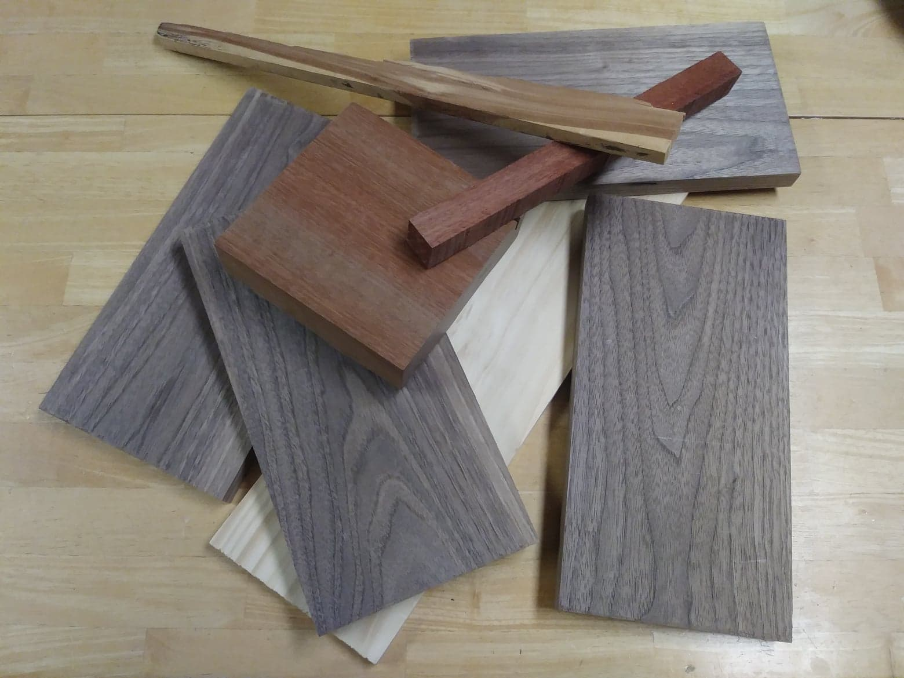

Hi! I'm Anna Lewis Campbell. I've been a woodworker for about 9 years now. People often ask me how I got into woodworking. The truth is, it's sort of a strange story. One day, I just woke up with the desire to learn how to carve wood. I asked my parents, "Do we know anyone that can carve?" They told me they thought one of my uncles could carve. So little Anna sat down and wrote him a good old-fashioned snail mail letter to ask him to teach me to carve. Now my uncle lived 5 hours away, and there was no way he'd be able to teach me. But he sent me some supplies: a set of chisels, a tabletop workspace, and some cedar. I got to work teaching myself. The first few tries were fun, but awful. But I kept at it and read books and watched videos, and eventually, I got pretty good. Now I make lots of big and small knick-knacks for myself, friends, and family. And so can you! This is a site dedicated to people who are just getting started. Take a look around and figure out what you want to try!
The two are actually a bit different, but I do them both. Whittling is sculpting something out of wood using only a knife. Woodcarving uses different tools, including power tools and chisels. Carving can date back to ancient history and was used to make furniture, tools, monuments, buildings, and more. Today, machines make much of our furniture and building supplies, but carving is still used to make decorative and practical items by hand.
Anna Lewis Campbell
aalxbt@umsystem.edu